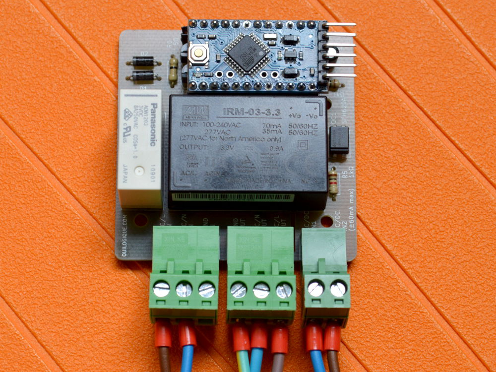

Commande d’un relai bistable 240 V avec un Arduino Pro Mini
Projet
Commande d’un relai bistable qui doit commuter du 240 V avec une tension de commande de 9V très instable. Pour limiter les effets de cette instabilité, le système doit être temporisé, c’est-à-dire que dès que la première impulsion de commande est détectée, le relai doit s’ouvrir et rester ouvert pendant un temps défini (60 s dans ce projet), même si la tension de commande disparait. La temporisation est remise à zéro à chaque changement d’état de la commande. La détection de la commande 9 V et la temporisation sont réalisées avec un Arduino Pro Mini (ATmega 328p, 3.3V, horloge 8MHz interne).
Cette commande à relai est utilisée pour alimenter un lit électrique avec commande 9 V dans les mains de l’utilisateur. L’idée est d’amener le 240 V jusqu’au lit uniquement quand l’utilisateur actionne les moteurs. Ainsi il ne passe pas ses nuits avec du 240 V dans le dos. D’origine, le lit était livré avec un système à relai qui a cessé de fonctionné, probablement à cause de l’instabilité de la tension de commande. Et comme ce modèle n’existe plus depuis belle lurette, j’ai décidé d’en construire un nouveau.
Ce circuit est conçu pour consommer le moins possible puisqu’il est branché 24/24, mais utilisé que quelques secondes par jour. Pour cela, l’Arduino est mis en veille lorsque le relais est ouvert et consomme moins de 100 µA. La consommation totale du circuit est trop faible pour que je puisse la mesurer, mais je suppose qu’elle est de l’ordre du courant de fuite de l’alimentation Mean Well (< 0.25 mA d’après le fabricant).
Matériel
- Alimentation Mean Well, IRM-03-3.3, 3.3V, PCB
- Relais de puissance pour circuits imprimés 3 VDC 400 mW, ADW1203W, Panasonic
- Transistor NPN BC337, Spécifications (PDF)
- Veroboard, Carte de laboratoire Papier bakélisé au phénol FR2, 710-2, Rademacher
- Diode 1N4004 400 V 1A DO-41
- Optocoupleur SFH620A DIP DIP-4
- Relai solid state (pour le tout premier proto)
- Boitier plastique
- Presse-étoupes
- Forêts à étage (pour la découpe des passages des presse-étoupes)
- Arduino Pro Mini
- Interface clone FTDI (je déconseille ce modèle car il envoie du 5 V en mode 3.3 V, mais pour l’Arduino Pro Mini, ça n’a pas de conséquence)
- Borniers
- Connecteurs 3 pôles
- Connecteurs 2 pôles (plus disponible)
Programme
Pour la programmation de l’Arduino Pro Mini dans l’IDE Arduino, voir https://ouilogique.com/arduino-pro-mini/
Schéma électrique
Montage final avec PCB
J’ai designé le PCB sur KiCad et je l’ai fait fabriquer chez SeeedStudio.
{:style=“width:50%; float:left”}
 {:style=“width:50%; float:left”}
{:style=“width:50%; float:left”}
 {:style=“width:50%; float:left”}
{:style=“width:50%; float:left”} {:style=“width:50%”}
{:style=“width:50%”} {:style=“width:100%; margin-top: 50px;”}
{:style=“width:100%; margin-top: 50px;”}{kind=link}
{kind=link}
{kind=link}
{kind=link}
{kind=link}
Prototype sur veroboard
Pour diminuer la consommation d’énergie, j’ai dessoudé la LED verte sur l’Arduino Pro Mini qui indique qu’il est alimenté.
Les optocoupleurs SFH620A que j’ai reçus n’ont pas l’indication de la broche 1 sur le boitier. Cette broche se trouve en haut à gauche quand on tient la puce de façon à pouvoir lire le texte sur le dos du boitier normalement.
Les broches du relai Panasonic ADW1203W ne sont pas au pas de 2.54 mm. J’ai dû souder des fils aux broches et les plier pour pouvoir souder le tout sur le veroboard.

{kind=link}

{kind=link}

Prototype sur breadboard
Avec un relai bistable au lieu des relais solid state.
{kind=link}
Tout premier prototype dans une boîte en carton…
Le tout premier prototype était basé sur un Arduino UNO avec deux relais solid state, un pour la phase et l’autre pour le neutre. J’ai préféré la solution avec relai bistable pour le deuxième proto (ci-dessus), pour assurer la séparation galvanique. Le relai bistable a aussi l’avantage de ne consommer que lors des commutations. Comme il ne commute que la phase, j’ai utilisé un cordon 240 V avec une prise à 3 broches pour être sûr que c’est la phase qui est connectée au relai (et pas le neutre).

© ouilogique.com